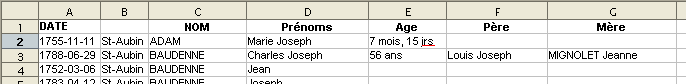
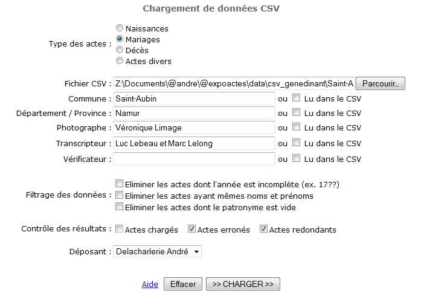
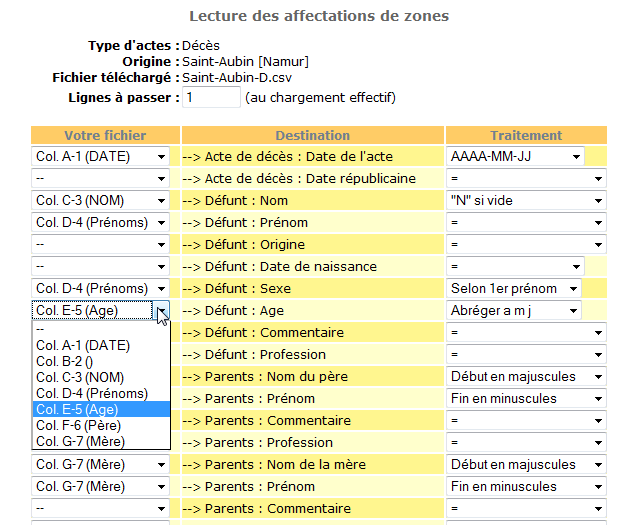
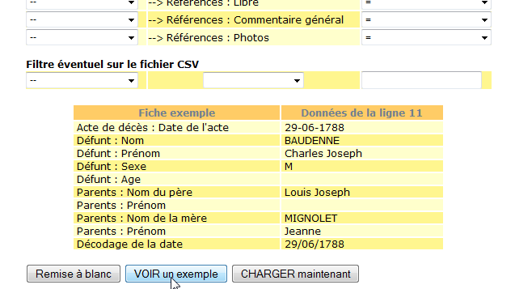
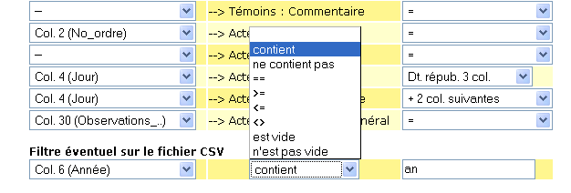

Retour à la liste des fichiers d'aide
Cette option permet de charger des actes encodés dans MS-Excel ou dans OpenOffice (Classeur) en s'adaptant de façon très souple à la structure de votre fichier.En général, les tableaux de dépouillements comportent en première ligne les noms des colonnes précisant le type d' information qui peut y être rangée. Par exemple, Nom, Prénom, Sexe, Nom du père, Nom de la mère, .... Ensuite dans les lignes suivantes se trouvent les informations dépouillées, un acte par ligne.
Il convient de commencer par enregistrer la feuille au format CSV en prenant soin de choisir le point-virgule ou la tabulation pour séparer les champs. Autant que possible, il vaut mieux faire encadrer les champs par des guillemets. Ce n'est pas obligatoire sauf si les textes encodés comportent eux-mêmes des points-virgules.
Il n'y a par contre pas de contrainte sur le nombre ou l'ordre des colonnes.

Exemple de fichier à charger
Le premier écran de chargement permet de sélectionner le fichier CSV à charger et préciser quelques paramètres de chargement.

Exemple d'écran de chargement d'un fichier csv
En cliquant sur le bouton " >> CHARGER >> " le fichier est téléchargé sur le serveur et y est stocké en vue de son exploitation ultérieure.
L'écran présente alors un grand tableau permettant de décrire la façon d'associer les colonnes du fichier CSV (colonne de gauche du tableau) avec les zones de la base de données (colonne du milieu) en appliquant le cas échéant un "traitement" préalable (colonne de droite).

Exemple d'écran d'affectation de zones
Dans la première colonne, chaque boîte de sélection contient la liste de toutes les colonnes du fichier CSV (présentes sur la première ligne du fichier). Lorsque cette ligne contient les descriptions des colonnes ce sont elles qui sont affichées (seulement les 13 premiers caractères si cette description est plus longue que 15 caractères). Si la première ligne contient déjà des données, ce sont ces dernières qui sont affichées.
Pour chaque ligne, il suffit de sélectionner la colonne appropriée à la zone de la base de données ou de laisser le symbole tiret ( -- ) si rien ne doit être chargé. Il est tout à fait possible d'associer une même colonne avec plusieurs zones destination. Dans ce cas, un traitement approprié permettra de décomposer le contenu de cette colonne de façon adéquate.
Lorsque chaque colonne est associée avec la zone voulue, il est possible de prévisualiser le résultat en cliquant que le bouton " VOIR un exemple ".

Affichage de la fiche exemple (seconde ligne du fichier présenté plus haut)
Chaque pression sur le bouton " VOIR un exemple " permet de prévisualiser la fiche suivante.
Le tableau d'affectation des zones étant toujours affiché, il est possible de corriger ce qui est éventuellement nécessaire, puis de vérifier en affichant la fiche suivante.
Lorsque les affectations sont correctes, il ne reste qu'à charger effectivement le fichier en pressant le bouton " CHARGER maintenant ". Le système passe le nombre de lignes annoncé en haut du tableau. Ordinairement, il faut passer une ligne pour ne pas charger les intitulés des colonnes.
Si le fichier est très grand et/ou que le serveur est fort occupé, il se peut que le chargement ne puisse se terminer pendant le temps limite fixé par l'hébergeur. Dans ce cas, 3 secondes avant la fin du temps limite, le programme stoppe le chargement et affiche un écran permettant de continuer le travail sur la suite du fichier. De cette façon, il est possible de charger un gros fichier en plusieurs "passes" en cliquant simplement plusieurs fois sur le bouton "Charger maintenant".
Les associations entre colonnes et zones ainsi que les traitements sélectionnés sont mémorisés dans un cookie. De cette façon, lorsque l'on charge souvent des fichiers de même structure, l'association est immédiate.
Le bouton " Remise à blanc " annule toutes les associations. Cette option est pratique lorsque le fichier à charger a un format très différent du précédent.
Dans certains cas, il peut être nécessaire de traiter un fichier en plusieurs passages car les lignes ne sont pas toutes codées de la même manière. Pour cela il convient de ne traiter que les lignes qui satisfont à une condition qui peut être exprimée avec le filtre.

Exemple de filtre permettant de sélectionner les actes avec année révolutionnaire.
Pour qu'un filtre soit utilisé, il faut donc sélectionner la colonne sur laquelle porte la condition. Choisir ensuite le mode de comparaison et enfin indiquer le texte auquel il faut comparer sauf pour les condition "n'est pas vide" et "est vide" qui teste seulement si a colonne contient ou non des informations.
Notons que la prévisualisation de fiche utilise également le filtre pour rechercher l'acte à afficher.
Quatre catégories de "traitements" ont été définies selon la nature de la zone destination. De façon générale, chaque traitement permet de modifier le contenu de la colonne source en en extrayant une partie ou en regroupant son contenu avec celui d'une ou plusieurs colonnes suivantes.
Chaque traitement est identifié dans la boite de sélection par un titre qui résume son action. Le symbole "=" signifie qu'aucun traitement n'est exécuté : le contenu de la colonne est affecté tel quel à la zone.
Traitement applicables aux zones contenant du texte (Nom, prénom, profession, origine, ...)
- "N" si vide
- Ajoute le code "N" dans la zone si la colonne est vide. Ceci permet d'éviter d'avoir une zone vide pour le nom d'une personne.
- en Majuscules
- Transforme tout le texte de la colonne en majuscules. Utile pour les patronymes.
- 1er mot seulement
- Ne garde que le premier mot (avant le premier espace)
- Sauf 1er mot
- Ne garde que ce qui suit le premier espace rencontré
- Dernier mot seulement
- Ne garde que ce qui suit le dernier espace blanc (ou tout le contenu s'il n'y a qu'un mot)
- Sauf dernier mot
- Début du texte jusqu'au dernier espace blanc (ou rien s'il n'y a qu'un mot)
- Début en majuscule
- Premiers mots écrits complètement en majuscules. Si les premiers mots ne sont pas en majuscules, il sont inclus également de façon à absorber les particules des patronymes.
Exemples : "DELARUE André Marcel" retourne "DELARUE"; "de la RUE André" retourne "de la RUE"; "DE VILLERS DE DION Emile" retourne "DE VILLERS DE DION" mais "de VILLERS de DION Emile" retournera "de VILLERS" puisque le mot suivant n'est pas complètement en minuscule.- Fin en minuscule
- Complémentaire au précédent, retourne la partie qui suit le "début en majuscule".
- Contenu parenthèses
- Recherche une parenthèse ouvrante et retourne le contenu jusqu'à la parenthèse fermante ou jusqu'à la fin s'il n'y en a pas. Les parenthèses ne sont pas conservées.
Exemple : "Albert (Oncle)" retourne "Oncle".- Sauf parenthèses
- Complémentaire au précédent, retourne ce qui est en dehors de la parenthèse, c'est-à-dire avant la première parenthèse ouvrante et après la 1ère parenthèse fermante.
- Avant la virgule
- Retourne le texte précédant la DERNIERE virgule de la chaîne.
Exemple : "Albert, Emile, de Houdremont" retourne "Albert, Emile".- Après la virgule
- Retourne le texte qui suit la DERNIERE virgule de la chaîne.
Exemple : "Albert, Emile, de Houdremont" retourne "de Houdremont".- Patronyme si pas vide
- Examine la colonne spécifiée et lorsque celle-ci contient bien un texte, retourne le patronyme de la première personne identifiée (typiquement le NOM du nouveau-né ou du défunt). Ce traitement permet de reconstituer le nom du père en recopiant celui du fils ou de la fille lorsque ce nom n'a pas été encodé.
- "+" si pas vide
- Ce traitement produit une croix, abréviation usuelle de "décédé" lorsque la colonne contient un code quelconque. Cela permet de par exemple de transformer une colonne "Décédé" dans laquelle on a indiqué des "X".
- + (x) col. suivante(s)
- Retourne le contenu complet de la colonne spécifiée suivi par le contenu des x colonnes suivantes. Les contenu des différentes colonnes sont séparés par des virgules. Ce traitement permet typiquement de regrouper plusieurs compléments d'informations dans une seule zone commentaire.
Traitements spécifiques pour les zones "SEXE" (sexe du nouveau-né, du défunt ou des intervenant d'un acte divers)
- Toujours Masculin
- Toujours Féminin
- Inconnu
- Retourne selon le cas les valeurs constantes "M" , "F" ou "?"
- Selon 1er prénom
- Détecte le sexe (probable) en se basant sur le premier prénom (il faut indiquer la colonne contenant le prénom à examiner). Le système se base sur une liste de près de 200 prénoms féminins usuels (anciens) pour décider si le prénom est celui d'une homme ou d'une femme.
Traitements spécifiques pour les zones "AGE" (âge d'un défunt ou des conjoints d'un mariage)
- Chiffres seulement
- Ne garde que les chiffres, points et virgules du texte présenté.
- Abrégé a m j
- Abrège le texte en remplaçant "ans" par "a", "mois" par "m", "semaines" par "s" et "jours" par "j". Les blancs et virgules sont également supprimés.
Exemple : "3 ans, 10 mois" est remplacé par "3a10m".
Traitements spécifiques pour les zones "DATE" (date de l'acte et dates de naissance des intervenants)
Le format "naturel" des dates est le format numérique formé
par le numéro du jour, suivi du numéro du mois puis de celui
de l'année. Ces numéros peuvent être séparés
par un point, un tiret, un "slash" (/) ou encore un blanc. Exemple
: 22.04.1619 ou 22-04-1619 ou 22/4/1619 ou encore 22 4 1619.
Si la date n'est pas dans ce format dans la colonne du fichier CSV, il convient
de lui appliquer l'une des traitements suivants :
- AAAA-MM-JJ
- C'est le format inversé en plaçant l'année d'abord, avant le mois puis le jour. En fait les séparateurs peuvent aussi être le point, le tiret, le slash ou le blanc et les numéros de jours ou de mois inférieurs à 10 peuvent ne compter qu'un seul chiffre.
Exemple : 1619-04-22 ou encore 1619/4/22- JJMMAAAA
- Forme compacte de la date, il n'y a pas d'espace ou de signe séparateur. Les numéros de jours ou de mois inférieurs à 10 doivent être précédés d'un 0.
Exemple : 22041619.- AAAAMMJJ
- Version inversée du format compact précédant.
Exemple : 16190422.- JJMMMAAAA
- Dans cette forme compacte, le numéro du mois est remplacé par son abréviation française ou anglaise.
Exemple : 22AVR1619 ou 22APR1619.- AAAAMMMJJ
- Version inversée du format précédant.
Exemple : 1619AVR22.- 3 col. JJ MM AAAA
- La date est ici éclatée en trois colonnes qui doivent être contiguës, la première indique le jour, la seconde le mois et la troisième l'année. Les numéros inférieurs à 10 peuvent comporter un seul chiffre ou être précédés du zéro. Dans le tableau d'affectation des zones, c'est toujours la première colonne qu'il faut indiquer.
Exemple : colonne 4 = "22", colonne 5 = "4", colonne 6 = "1619", pointer vers la colonne 4.- 3 col. AAAA MM JJ
- Version inversée du format précédant.
- Dt. répub. 1 col.
- Date républicaine présentée dans une seule colonne. Le traitement retourne la date grégorienne correspondante. Le format de la date républicaine doit être formé par trois parties : d'abord le numéro du jour (de 1 à 30), ensuite le nom du mois (VENDémiaire, BRUmaire, ... FRUctidore et jours COMplémentaires), enfin l'année qui peut être précédée du mot "an" et être exprimée en chiffres arabes ou romains.
Les éléments doivent être séparés par des blancs, des tirets, des points ou des slashs.
Exemples : 3 fructdore an 7, 04 VEND XI, 3 COMP 6.- Dt. répub. 3 col.
- Analogue au précédent mais avec les trois parties de la date dans trois colonnes consécutives.
Cette large batterie de fonctions de (pré-)traitement de l'information devrait faciliter la conversion de nombreuses données sans nécessité aucune manipulation des le tableur (Excel ou Open Office).
Parfois, un simple "Rechercher - Remplacer" permettra d'adapter lighrement le format du fichier pour qu'il puisse utiliser l'un des traitements prédéfinis ici.
Exemple : Si la colonne prénom contient le lieu d'origine précédé du mot "de" (Albert de Montdru), il suffit de faire remplacer un remplacement automatique limité à la colonne concernée de " de " (précédé et suivi d'un blanc) par " , ".